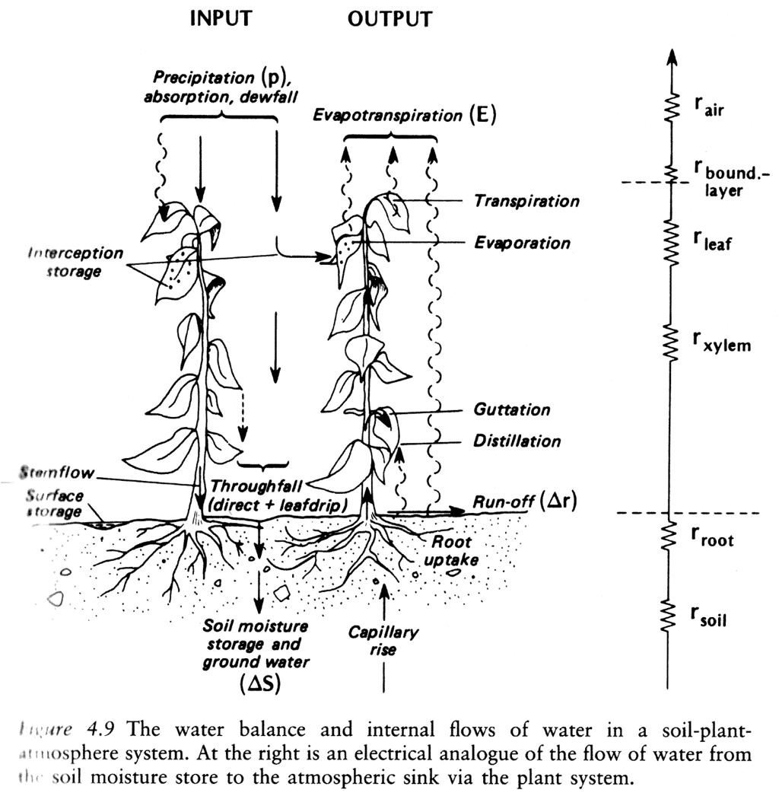
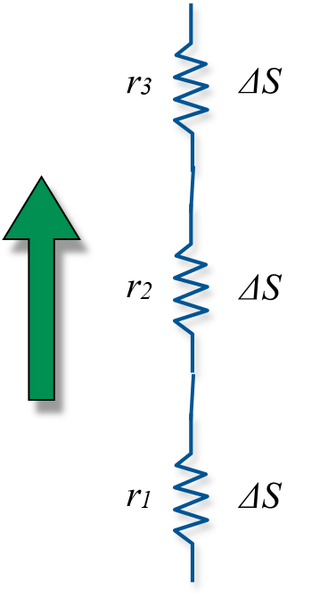
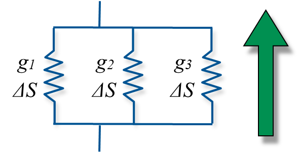
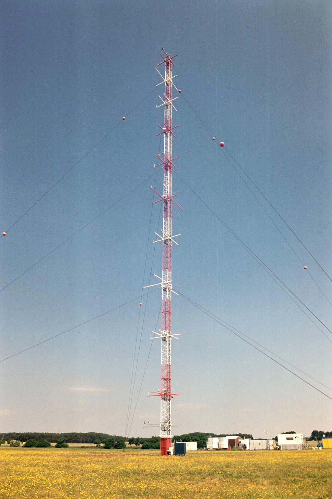
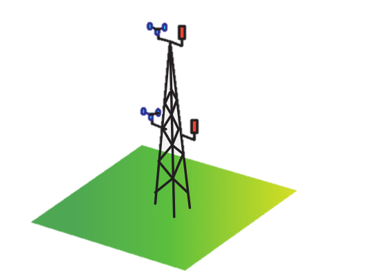

Explain what can we learn from electrical circuits (Ohm’s Law) to describe heat and mass transfer on a land-atmosphere interface.
Discuss is we can we use the K-Theory introduced for the momentum transfer to relate the gradients of temperature, humidity and trace gas concentrations to fluxes.
Making the K-Theory useful - Reynold’s analogy (similarity) and aerodynamic approach.
Vertical turbulent flux of sensible heat, latent heat and trace gases
Resistance Approach - Ohm’s Law
To describe land-atmosphere exchange of heat, mass and momentum we can identify resistances of different sub-processes, e.g. of plant components (leaf, xylem, root, etc.), soil, whole PBL, etc.
Resistance relate the flux to a measured difference Δs across part of a system. For a given difference:
Low resistance - high flux densityHigh resistance - low flux density

Oke (1987)
Inspired by Ohm’s Law
We can define a scalar flux (\(F_c\) in \(m^{-2} s^{-1}\)) in terms of storage (\(\Delta S\) in \(m^{-3}\)) and either resistance (\(r\) in \(s m^{-1}\)) or conductance (\(g\) in \(m s^{-1}\)):
\[
F_c = \frac{\Delta S}{r}
\tag{2}\]
\[
F_c = g \Delta S
\tag{3}\]
Resistances vs. Conductances

Resistances are additive in series

Conductances are additive in parallel
Resistances at the surface-atmosphere interface
Several types of resistances / conductances can be conceived of, depending on the transport processes in the layer, e.g.
\(r_a\) (or \(g_a\)) - aerodynamic resistance (conductance) in the turbulent surface layer. Depends on degree of turbulent activity.
\(r_b\) (or \(g_b\)) - laminar boundary layer resistance (conductance) in the LBL immediately adjacent to surfaces. Depends on molecular diffusivities and thickness is the key variable.
\(r_s\) (or \(g_s\)) - stomatal resistance (conductance) of leaf pores. Depends on stomatal aperture (light, T, VPD, \(CO_2\) conc., leaf water potential)
\(r_c\) (or \(g_c\)) - canopy or surface resistance (conductance). Integrated resistance of complete surface system including \(r_s\) and \(r_b\) of leaves and air in canopy.
K’s are extremely variable in time, space and atmospheric conditions (stability).
Requires instruments capable of measuring small vertical gradients (differences) to high accuracy.
Also the K-theory does not account for counter-gradient transport.
In the atmosphere, sometimes fluxes are counter gradient. Due to a large eddies which (briefly) transport flux regardless of background average (e.g. within plant canopies)

A 100m profile research tower probing theatmospheric surface layer (Falkenberg, DWD, Photo: A. Christen)
Reynolds Analogy
Reynolds surmised that in fully turbulent flow (high \(R_e\)) eddies would carry entities with equal ease (similarity principle):
\(K_m = K_H = K_v = K_c\)
and consequently, over the same layer
\(r_{am} = r_{aH} = r_{av} = r_{ac}\)
Practically this implies that we must only determine one of the K’s
Generally held that close to the ground this applies, except that \(K_M\) becomes increasingly dissimilar as instability increases, and then:
\(K_x \propto K_M^2\)
Using K-theory & Reynold’s Analogy to measure fluxes
Assumptions:
Neutral stability: buoyancy effects are absent.
Steady state: no marked shifts in the radiation or wind fields during the observation period.
Constancy of fluxes with height: no vertical divergence or convergence.
Similarity of all transfer coefficients.

2 x Anemometer & 2 x Thermometer-Hygrometer
Reynolds Analogy
If we assume a similarity, we can take ratios of flux-gradient equations, and eliminate the K’s. If one flux is known (usually \(\tau\) from a measured wind profile), we can obtain other if their gradients are measured, e.g.
The aerodynamic approach requires the measurement [or prediction in a model] of mean wind u and relevant property (e.g. potential temperature \(\Theta\) absolute humidity \(\rho_v\) ) at same two heights [or layers]. It relies on the similarity of \(K_M\) and \(K_x\).
Assumptions:
Neutral stability - buoyancy effects are absent.
Steady state - no marked shifts in the radiation or wind fields during the observation period.
Constancy of fluxes with height - no vertical divergence or convergence.
\[
LE = -\frac{L_v k^2 \Delta\bar{u} \Delta\bar{\rho_v}}{[ln(z_2/z_1)]^2}
\]
2 x Anemometer & 2 x Thermometer-Hygrometer
Take Home Points
Resistance allow us to handle the flow of energy and mass though a complex system such as a land-atmosphere interface. Resistances can be formulated in series or in parallel.
Resistance formulations and flux-gradient relations (using eddy diffusivities, i.e. K’s) can be used to describe sensible, latent heat and trace gas transfer.
Reynolds analogy assumes that the eddy diffusivities for different scalars are similar, i.e. \(K_M\) = \(K_H\) = \(K_E\) = \(K_C\)
This allows us to overcome the severe restrictions of using K-theory - as in the aerodynamic approach the K’s cancel out.